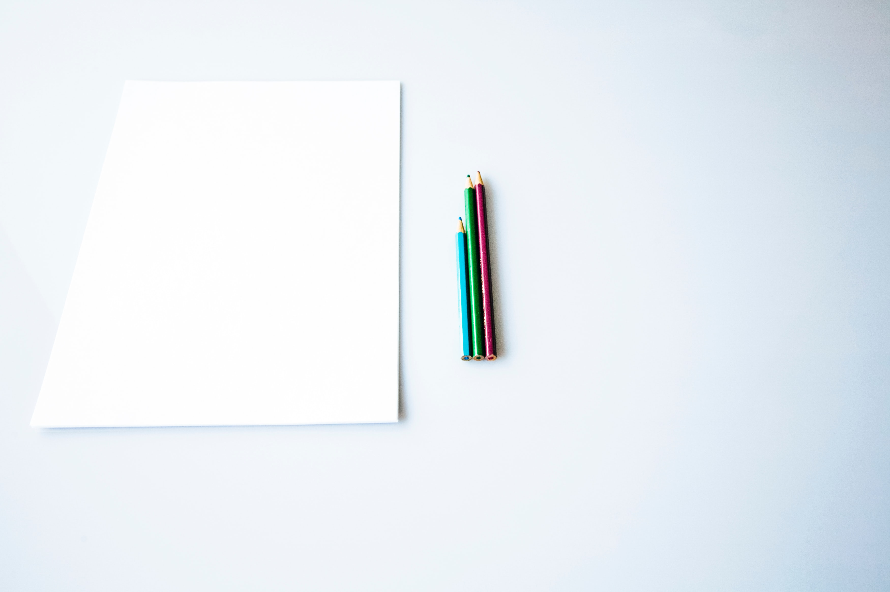

이제니
우리는 태어나지 말았어야 했다. 사랑할수록 죄가 되는 날들.
시들 시간도 없이 재가 되는 꽃들. 말하지 않는 말 속에만 꽃이 피어 있었다.
천천히 죽어갈 시간이 필요하다. 천천히 울 수 있는 사각이 필요하다.
품이 큰 옷 속에 잠겨 숨이 막힐 때까지. 무한한 백지 위에서 말을 잃을 때까지.
한 줄 쓰면 한 줄 지워지는 날들. 지우고 오려내는 것에 익숙해졌다.
마지막은 왼손으로 쓴다.

This is heading 1
This is heading 2
This is heading 3
This is heading 4
This is heading 5
This is heading 6